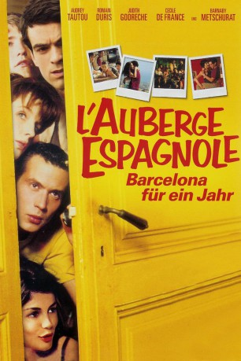

#476 L'Auberge espagnole 1 - Barcelona für ein Jahr
Alternativ: L'auberge espagnole
 
 IMDB-Wertung: 7.3 / 10
IMDB-Wertung: 7.3 / 10  Metascore: 65
Metascore: 65 
Unter heißen Treueschwüren verabschiedet sich der zugeknöpfte Xavier von seiner Pariser Freundin, um ein Jahr in Barcelona zu studieren. Nach dem Einzug in eine multinationale WG stehen statt Büffeln, Beziehung und Beruf schon bald Partys, Pennen und pure Lebenslust ganz oben auf seiner Prioritätenliste. Als ihm die lesbische Mitbewohnerin auch noch beste Verführungskniffe beibringt, steht einer heißen Affäre mit der verheirateten Anne-Sophie nichts mehr im Wege - und das Bild der ehedem heiß geliebten Martine verblasst zusehends.
Jahr: 2002
Dauer: 122 Minuten
FSK: 6
Land: Frankreich Studio: TOBIS FilmTonspuren:
Untertitel: Deutsch,
Auflösung: 1080p (1920x1040) Größe: 8939 MB
Genre: Komödie, Drama, Liebe
Regisseur: Cédric Klapisch
Drehbuch: Cédric Klapisch
Soundtrack:
Darsteller:
 Romain Duris als Xavier
Romain Duris als Xavier Judith Godrèche als Anne-Sophie
Judith Godrèche als Anne-Sophie Audrey Tautou als Martine
Audrey Tautou als Martine Cécile De France als Isabelle
Cécile De France als Isabelle Kelly Reilly als Wendy
Kelly Reilly als Wendy- Cristina Brondo als Soledad
 Barnaby Metschurat als Tobias
Barnaby Metschurat als Tobias- Kevin Bishop als William
- Irene Montalà als Neus
 Iddo Goldberg als Alistair
Iddo Goldberg als Alistair- Olivier Raynal als Bruce
- Paulina Gálvez als Flamenco Teacher
 Daniel Grao als Catalan Student 2
Daniel Grao als Catalan Student 2 Zinedine Soualem als Barman
Zinedine Soualem als Barman Cédric Klapisch als Le professeur stressé , uncredited
Cédric Klapisch als Le professeur stressé , uncredited- Federico D'Anna als Alessandro
- Christian Pagh als Lars
- Xavier De Guillebon als Jean-Michel
 Wladimir Yordanoff als Jean-Charles Perrin
Wladimir Yordanoff als Jean-Charles Perrin- Javier Coromina als Juan
- Martine Demaret als Xavier's Mother
- Jacno als Xavier's Father
- Sylvie Lachat als University Secretary
- Magali Roze als Stewardess
- Shilpa Baliga als Nurse Miralpeix
- Nadala Batiste als Neighbor Miralpeix
- Pere Sagristà als Catalan Teacher
- Pere Abelló als Landlord
- Babou Cham als Catalan Student 1
- Iván Morales als Catalan Student 3
- Jacques Royer als Erasmus
- Mira Wanting als Mira
- Arsène Royer als Lars' Son
- Sophie Delin als Apartment Neighbor
- Pablo Klapisch als Xavier as a Child
- Lise Lamétrie als La femme au ministère , uncredited
- Sophie Le Tellier als (uncredited
- Piero Verzello als Catalan boy , uncredited
Datei: X:\3-Trilogie(G-M)\L'Auberge Espagnole\L'Auberge espagnole 1 - Barcelona für ein Jahr (2002, FSK6, 1920x1040).mkv seit 01.03.2015
Festplatte: HD Collection-2(A-Z)-3(A-M)
 Alle Filme aus Gruppe '3-Trilogie(G-M)\L'Auberge Espagnole'
Alle Filme aus Gruppe '3-Trilogie(G-M)\L'Auberge Espagnole'